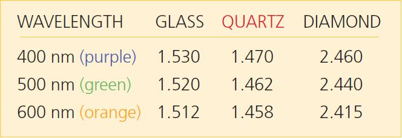
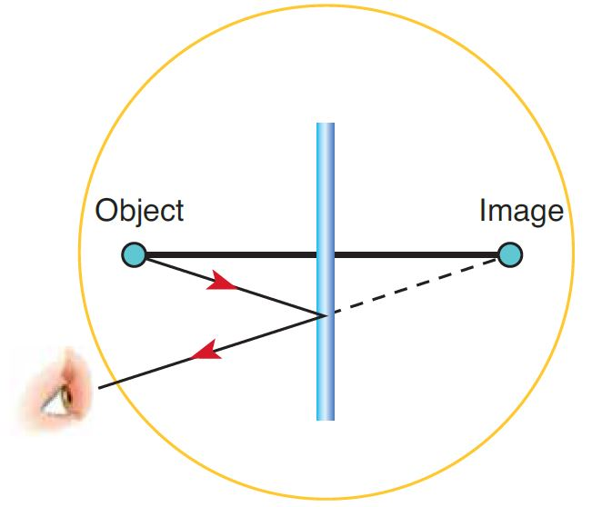

At any point, if you hover your mouse over a video, a button will appear in the upper right corner. If you click it, it will open the video in another tab allowing you to go fullscreen.
If you are using the Safari browser, this is the only way to watch the videos.
You will be expected to turn in all plots and tables you are asked to make in the exercises, as well as all answers to questions.
The figure above shows beams of light being emitted from the blue semicircle at bottom left, through one medium having an index of refraction of , towards the interface of that medium with a second medium having an index of refraction of . The beams in the lower region are the incident beams. The beams in the upper region are the refracted beams. Note that two of the exiting beams, A through C, are bent (refracted) away from the normal. This indicates that the index is greater than the index . (You will see more about this below.) This figure could represent light coming from water and going into air. When a beam is perpendicular to the interface boundary, as is beam A, it is said to be normal to the interface. An interface is the layer or region where dissimilar transparent materials meet each other.
Question 1
a.) Is there any change in the path of the normal light beam (A) as it goes from the lower region to the upper?
b.) Is the angle of the refracted light beam (look at beam B or C) more or less than the angle of the respective incident beam? What happens as the angle of the incidence increases? (Goes from B to C)
c.) Is there a particular angle at which the rays do not behave as ray B or C does?
d.) Does light transmit into the upper region when the incident angle is larger than ?
Theory: When a light ray encounters a boundary between two materials, it experiences a change in direction due to the difference in the materials’ indexes of refraction, typically denoted as and . The particular physics of this is beyond the scope of this lab. The empirical results, however, are neatly summarized by Snell’s Law:
Note: All angle measurements are from the nearest perpendicular to the ray. Thus a small angle is almost perpendicular to the surface and a large angle is nearly tangent. Note that all angles are less than 90 ̊. When visible light reaches a (transparent) interface, some of it is reflected backwards at an angle equal to that at which it struck the interface. (We’ll learn more about this later.) Most of it, however, passes into the second medium, with its path bent along a line whose angle is given by Snell’s Law of refraction.
Note 2: typically refers to the material the light beam comes from, and refers to the material the light beam goes into. The speed of light depends on the medium in which it is traveling. Light travels at in a vacuum, and more slowly within a medium. It is this change in velocity which gives rise to the index of refraction. They are explicitly related by:
where is the index of refraction, is the speed of light in a vacuum and is the speed of light in the medium. If you know the medium’s index, you know the speed of light in that medium.
Simulation: Let’s start by looking at a simulation of what happens when light interacts with a boundary.
Exercise 1
In this exercise you will use a computer program to simulate what happens to light at a boundary.
The top material should already be set to “Air.” Leave it as that. Change the bottom material to “Mystery B.”
Turn on the laser by clicking the large red button. Click on the grey housing of the laser, and move it to a new angle.
Use the protractor tool to measure the new incident angle and refracted angle.
Question 2
a. What is the index of refraction for the material “Mystery B?” Show your work.
b. What is the speed of light in the "Mystery B" material.
Experiment: We will use the optical bench in this experiment. Treat the semi-circular acrylic block as an unknown. Our objective is to find its index of refraction. corresponds to the plastic block, and corresponds to the air. Measuring both the incident and refracted angles and assuming the index of refraction for air to be , we are left with only one unknown, the index of refraction for the plastic, . We neglect the first boundary between air and the acrylic block because the incident beam is perpendicular to the cylinder’s surface.
In each of the following cases, record the incident and refracted angles.
Exercise 2
In the video below, you will be shown light passing through a semi-cylindrical prism (D-block). The light is coming from the bottom of the video and hitting the curved surface of the D-block first, then passing through the material and exiting the flat surface. (See Figure 2.)
You will use this video to make some measurements and answer the questions below.

Start by making a data table to record the incident and refracted angles.
Starting about about 2:20 in the video, the ray tracing table starts to be rotated. This goes on until about 3:50. Within this window, make the video pause at four different angles, and use the ray tracing table to record the incident and refracted angles. The video stops for a moment to highlight which angles you should be measuring. Feel free to use this as one of your measurements. Finally, be sure your choices of the incident angles produce a reasonable span of values. A selection of values ranging from to , would not be “a reasonable span." You should NOT spend more than 5 minutes making these measurements. If you do you, are working too hard.
Question 3
The light is passing through two boundaries – the curved surface and the flat surface. At which, or both, of these surfaces is refraction occurring? Why or why not?
Question 4
What is average index of refraction for the acrylic D-block? We will denote it .
Question 5
a. Based on the video, what is the critical angle for an acrylic-air boundary? We will denote it .
b. At the critical angle, the refracted light travels along the surface of the plastic block. Thus, , or ̊. Plug this into Snell’s law and compute .
Recall that the equation for percent difference is the following:
Where the average is given by:
Question 6
Compare your calculated to . What is the percent difference? Which is more accurate and why?
Question 7
What is the speed of light in the acrylic block?
Exercise 3
In this video you will see light passing into and out of an acrylic block. The unique thing about this situation is that the two refractive boundaries are parallel to one another. Pay attention to the relationship between the incident and refracted beams.
Question 8
a. In this orientation, how are the incoming and exiting beams related to each other?
b. Why is there an offset between the incoming and exiting beams? In a sentence or two, explain what is happening.
Theory:
The index of refraction for a medium is dependent upon the frequency of the light; blue light has a different index of refraction from that of red light for a given medium.
The angle at which a beam of light is refracted when traveling between two mediums is dependent upon their indexes of refraction.
The indexes of refraction are typically frequency dependent for a given medium. A medium will refract one color more than another color.
White light is made of many constituent colors.
Piecing these statements together, we have a tidy explanation for the phenomenon of a rainbow. At each boundary, some colors are refracted more than others, which results in white light being spread out into its constituent spectrum. This spreading is called dispersion. The second boundary of the prism – plastic to air – is at such an angle as to increase this dispersion. The difference between the index of refraction for the lowest frequency and the highest frequency determines how wide a rainbow you can see. A material with a larger spread in indexes will give a wider rainbow.
 Frequency-dependent index of refraction for glass, quartz, and diamond

Question 9
A beam of white light traveling in air is incident on a glass block at an angle of 17 degrees. Use Snell’s Law to compute the refracted angle for purple, green and orange light.
Experiment and Simulation:
Exercise 4
In this video you will see what happens when we refract white light. Recall that white light is composed of many different frequencies (colors) of light.
Now that you’ve seen dispersion happening in real life, try to recreate what you saw in a simulation.
Start by selecting the white light source instead of the laser. You can find this on the right side of the simulation, in the second row, third option on the right. You will know you have found it because the background will turn black.
Press the red button to turn on the light source and drag the D-block prism in front of the incident beam, hitting the curved side first.
Do your best to align the D-block prism so that the incident beam passes through the center of the D-Block prism (as in Figure 2).
Now you can use the knob at the bottom of the prism to rotate it about the center. Rotate it and watch what happens.
Question 10
a. Sketch the orientation of the block when the rainbow is most observable. Does this remind you of a particular angle? Why do you think this is?
b. Why do you think that when white light is going into the prism, a rainbow is coming out?
SINGLE PLANE MIRROR: We regularly encounter flat mirrors, as well as glass surfaces that act like mirrors. Intuitively you know that your image is standing directly across from you. When we speak in terms of ray tracing, we are the object and our reflection is the image. It is easy to convince yourself that this image is formed straight back – that is, normal to the plane of the mirror – and that it is also an equal distance behind the mirror.
The image of any point object in a plane mirror is simply the point straight across at an equal distance. This is the case for any viewing angle; you will see the image “behind” the mirror at an equal distance. The line between the object and image is always normal to the plane of the mirror.

Now let’s consider why ray tracing works. The law of reflection tells us that the angle of incidence is always equal to the angle of reflection. We also know that the image is formed by the light ray that emanates from the object, reflects off the mirror, and finally reaches our eye. The ray that reaches our eye must obey the law of reflection; its path is shown in Figure 4. It is important to note that this would work equally well for any set of angles. We see an image behind the mirror because of the law of reflection; if you extended the reflected light ray behind the mirror, it would arrive precisely at the image point as in Figure 4. The phenomenon of reflection fools us into thinking that the light rays originate from the image point.
Exercise 5
This exercise is only to help you gain intuition. You do not need to turn in anything for this exercise. Use this exercise to help you make sense of the paragraphs above and Figure 4.
This simulation explains what is happening when you see an object in the mirror. It is an interactive version of Figure 4. The mirror lies at the center of the screen, . The object and person are on the right. You can drag the yellow object to any positive position. Then you can move the eye to any positive position to view the object in the mirror.
The pink arrow coming off the object indicates a ray of light emitted from the object. When it hits the mirror, it is reflected, and this is the blue arrow. This beam is reflected into the viewer’s eye.
From the viewer’s perspective, the ray appears to come from behind the mirror. Its position is the dashed yellow image on the negative side of the plane.
To mimic the exercise you will be doing shortly, you need to do the following in the simulation.
The first selection shows the law of reflection, the second shows the object’s and the image’s distance from the mirror, and the final selection adds another green ray to the system.
Move the green arrow to another location.
Try to understand what is happening in the simulation. This is just a tool to help gain intuition. There is nothing to turn in for this exercise.
Exercise 6
Here we will show you how to set up a ray tracing for a plane mirror. In the video we are looking down onto the top edge of a flat mirror that is oriented perpendicular to the plane of your screen. The red pin that is placed will be the object. We will use yellow pins to mark the reflected rays. That is, we will align the yellow pins on the blue line in the simulation above.
The goal of this exercise is to trace the path that light takes from the object pin, off the mirror, and to your eye, on the paper on the left side of the screen. Then we will remove the mirror, and trace those rays to the right side of the screen, behind the mirror, to find the location of the image that we are seeing.
Now you have seen a video of the all of the rays being marked. What’s left to do is to trace the points into a diagram similar to what was in Simulation 3. Below is a link to an image paper that was created in the video. You will take that image and perform a ray trace.
Take this image and go to the website GeoGebra
For a guide on how to use the tools in GeoGebra and perform the ray trace, watch the video below.
Make sure to measure the incident and reflected angles for both rays.
Also include the distance from the object to the mirror and the image to the mirror.
Take a screenshot of your ray tracing and include it in your lab report.
Question 11
How does the object distance compare to the image distance? In ideal conditions, how should they compare?
Question 12
What are the angles of incidence and reflection for each of the rays? How should they be related?
Question 13
What could be the reasons for errors in the two questions above?
Exercise 7
Write a brief conclusion summarizing the important points of this lab.